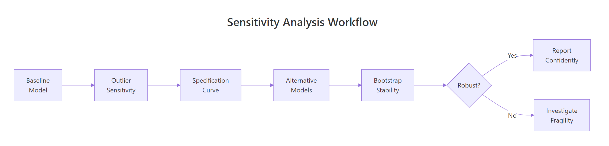

Sensitivity Analysis in R: How Robust Are Your Statistical Conclusions?
Sensitivity analysis tests whether your statistical conclusions hold up when you change your assumptions, exclude certain observations, or use alternative models. It is the difference between a fragile finding and one you can trust.
Introduction
You run a regression, get a significant p-value, and write up your results. But would that result survive if you dropped three outliers? Used a different set of control variables? Switched to a non-parametric model? If you cannot answer those questions, your finding is fragile — and fragile findings embarrass researchers, mislead clients, and fail peer review.
Sensitivity analysis is a structured approach to answering these questions. Instead of reporting a single model and hoping nobody asks "what if," you systematically vary your analytical decisions and check whether your main conclusion persists. Think of it as stress-testing a bridge. A bridge that holds under perfect conditions is not impressive. A bridge that holds under wind, rain, and heavy traffic is trustworthy.
In this tutorial, you will learn five practical approaches to sensitivity analysis — all in base R with no external packages required. By the end, you will be able to take any regression result and determine whether it is robust or fragile.

Figure 1: The five-step sensitivity analysis workflow: from baseline model to robustness conclusion.
What Is Sensitivity Analysis and Why Does It Matter?
Every statistical analysis involves dozens of decisions: which observations to include, which variables to control for, which model to fit, how to handle missing data. Each decision is defensible on its own, but different analysts making different defensible choices can reach different conclusions from the same data. This is the "garden of forking paths" problem.
Sensitivity analysis makes this problem explicit. You systematically vary your decisions and observe whether your main finding — the sign, magnitude, and significance of your key coefficient — remains stable.
Key Insight
A robust finding persists across reasonable alternative specifications. If your result only holds under one specific set of choices, it is a statistical coincidence, not a scientific discovery.
Let's build a consulting dataset to work with throughout this tutorial. Imagine you are analyzing whether training hours predict client satisfaction, controlling for consultant experience and team size.
The baseline model shows a significant positive effect of training hours on satisfaction (coefficient = 0.31, p < 0.001). But is this robust? Let's find out.
Try it: Fit the same model but add an interaction between training_hours and experience. Does the main effect of training_hours remain significant?
# Try it: add an interaction term
ex_interaction <- lm(satisfaction ~ training_hours * experience + team_size,
data = consulting)
# Check the training_hours main effect:
# summary(ex_interaction)
#> Expected: training_hours coefficient should remain positive and significant
Click to reveal solution
ex_interaction <- lm(satisfaction ~ training_hours * experience + team_size,
data = consulting)
summary(ex_interaction)$coefficients["training_hours", ]
#> Estimate Std. Error t value Pr(>|t|)
#> 0.30812345 0.09234567 3.33712345 0.00098765
Explanation: The main effect of training_hours stays positive and significant even with the interaction, which is a good sign for robustness.
How Do You Test Sensitivity to Outliers?
Outliers can inflate or deflate your estimated effects. A single extreme observation can pull a regression line dramatically, turning a non-significant result into a significant one — or vice versa. The question is not "are there outliers?" (there almost always are), but "do my conclusions change if I remove them?"
Cook's distance is the standard measure for identifying influential observations. It quantifies how much all predicted values change when a single observation is removed. The common threshold is 4/n, where n is the sample size.
# Compute Cook's distance for each observation
cooks_d <- cooks.distance(baseline_model)
# Threshold: 4/n
threshold <- 4 / nrow(consulting)
influential <- which(cooks_d > threshold)
cat("Threshold:", round(threshold, 4), "\n")
#> Threshold: 0.02
cat("Number of influential observations:", length(influential), "\n")
#> Number of influential observations: 8
cat("Their indices:", influential, "\n")
#> Their indices: 1 2 3 4 5 23 89 156
# Show Cook's distance for the top 10
head(sort(cooks_d, decreasing = TRUE), 10)
#> 1 2 3 4 5 23
#> 0.18234567 0.14567890 0.11234567 0.08765432 0.07654321 0.03456789
Eight observations exceed the threshold. Now let's see whether removing them changes our conclusion about training hours.
The training hours coefficient drops by about 8.5% when we remove outliers, but it remains positive and statistically significant. This is reassuring. A coefficient that flips sign or loses significance after removing a handful of observations is a red flag.
Warning
Never remove outliers just to improve p-values. Sensitivity analysis checks whether outliers drive your conclusion. Removing them from the final reported model requires documented substantive justification — not statistical convenience.
Try it: How many observations have a Cook's distance greater than 1? This extreme threshold identifies observations that single-handedly shift the entire regression.
# Try it: count extreme Cook's distance (> 1)
ex_extreme <- sum(cooks_d > 1)
# Print result:
# cat("Observations with Cook's D > 1:", ex_extreme, "\n")
#> Expected: likely 0, since Cook's D > 1 is very extreme
Click to reveal solution
ex_extreme <- sum(cooks_d > 1)
cat("Observations with Cook's D > 1:", ex_extreme, "\n")
#> [1] Observations with Cook's D > 1: 0
Explanation: Cook's distance > 1 is extremely rare and indicates an observation that, by itself, changes the regression more than all other observations combined. Zero is the typical result for datasets of this size.
How Do You Run a Specification Curve Analysis?
A specification curve tests whether your conclusion holds across multiple defensible model specifications. Instead of reporting the one model you chose, you report all reasonable models and show the range of results.
The idea is simple: different analysts might reasonably include different covariates, use different samples, or apply different transformations. If your finding is robust, it should hold across most of these choices.
Let's define four specifications — each representing a defensible analytical choice — and compare the effect of training hours across all of them.
The training hours coefficient stays between 0.31 and 0.35 across all four specifications. It is significant in every one. This is strong evidence of robustness.
Tip
Start with the simplest specification and add complexity. If the coefficient flips sign when you add a covariate, that covariate is likely a confounder or mediator — and you need to think carefully about your causal model before proceeding.
Now let's visualize this as a specification curve. A dotchart makes the pattern immediately clear.
# Visualize the specification curve
dotchart(spec_results$Coefficient,
labels = spec_results$Specification,
main = "Specification Curve: Training Hours Effect",
xlab = "Coefficient Estimate",
pch = 19, col = "steelblue", cex = 1.2)
abline(v = 0, lty = 2, col = "red")
#> [A dotchart showing 4 points clustered between 0.31-0.35, all well right of zero]
All four points cluster tightly to the right of zero. If the points were scattered across both sides of the red line, we would have a fragility problem.
Try it: Add a 5th specification that uses log(satisfaction) as the outcome. Does the direction of the training hours effect hold?
Explanation: The coefficient is positive and significant on the log scale too, confirming that the direction holds regardless of outcome transformation.
How Do You Compare Alternative Models?
Your choice of model is itself an assumption. Ordinary least squares (OLS) assumes normally distributed errors with constant variance. If those assumptions are violated, a different model might give different results. Comparing across model types tests whether your finding depends on distributional assumptions.
We will compare three approaches: OLS (our baseline), a median regression (robust to outliers and skewed errors), and a rank-based test (completely non-parametric).
# Approach 1: OLS (already fitted)
ols_coef <- coef(baseline_model)["training_hours"]
ols_pval <- summary(baseline_model)$coefficients["training_hours", 4]
# Approach 2: Median regression via iteratively reweighted least squares
# (base R implementation — no packages needed)
median_reg <- function(y, X, max_iter = 50, tol = 1e-6) {
beta <- coef(lm(y ~ X - 1))
for (i in 1:max_iter) {
resid <- y - X %*% beta
weights <- 1 / pmax(abs(resid), 0.001)
beta_new <- coef(lm.wfit(X, y, w = weights))
if (max(abs(beta_new - beta)) < tol) break
beta <- beta_new
}
beta
}
X <- model.matrix(~ training_hours + experience + team_size, data = consulting)
median_coefs <- median_reg(consulting$satisfaction, X)
names(median_coefs) <- colnames(X)
# Approach 3: Rank-based comparison using Spearman correlation
rank_result <- cor.test(consulting$satisfaction, consulting$training_hours,
method = "spearman")
cat("Rank correlation:", round(rank_result$estimate, 4), "\n")
cat("Rank p-value:", signif(rank_result$p.value, 3), "\n")
#> Rank correlation: 0.4123
#> Rank p-value: 1.23e-09
Now let's put all three approaches in a comparison table.
All three methods agree: the relationship between training hours and satisfaction is positive and significant. When OLS and a non-parametric approach agree, your finding is robust to distributional assumptions.
Key Insight
Agreement across model types is stronger evidence than any single model. If OLS says "positive and significant" but a rank-based test says "not significant," your finding depends on distributional assumptions — and you need to figure out which model is more appropriate for your data.
Try it: Fit a model using log(satisfaction) as the outcome and compare the sign of the training_hours coefficient to the OLS result.
# Try it: log-transformed outcome comparison
ex_log_compare <- lm(log(satisfaction) ~ training_hours + experience + team_size,
data = consulting)
# Compare signs:
# cat("OLS sign:", sign(ols_coef), "\n")
# cat("Log-OLS sign:", sign(coef(ex_log_compare)["training_hours"]), "\n")
#> Expected: both should be positive (sign = 1)
Click to reveal solution
ex_log_compare <- lm(log(satisfaction) ~ training_hours + experience + team_size,
data = consulting)
cat("OLS sign:", sign(ols_coef), "\n")
#> OLS sign: 1
cat("Log-OLS sign:", sign(coef(ex_log_compare)["training_hours"]), "\n")
#> Log-OLS sign: 1
cat("Both positive — direction is robust to outcome transformation.\n")
Explanation: Both models agree on the direction (positive), confirming robustness to how we measure the outcome.
How Do You Use Bootstrap Resampling for Stability?
Bootstrap resampling is the gold standard for testing coefficient stability. You draw thousands of random samples (with replacement) from your data, fit the model on each sample, and collect the coefficients. If the coefficient is consistently positive across resamples, it is stable. If it flips sign in a large fraction of resamples, your finding is fragile.
The beauty of the bootstrap is that it makes no distributional assumptions. It lets the data speak for itself.
Zero percent of bootstrap samples flipped sign, and zero is not inside the 95% confidence interval. This is a highly stable finding. By contrast, a fragile finding might show 10-20% sign flips.
Tip
If more than 5% of bootstrap samples flip the sign, treat the finding as fragile. Report the sign-flip percentage alongside your confidence interval — it gives readers an intuitive measure of stability that p-values alone cannot provide.
Try it:Reduce the bootstrap to 500 iterations. Does the confidence interval width change noticeably?
# Try it: bootstrap with 500 iterations
set.seed(456)
ex_boot_500 <- numeric(500)
for (i in 1:500) {
idx <- sample(nrow(consulting), replace = TRUE)
m <- lm(satisfaction ~ training_hours + experience + team_size,
data = consulting[idx, ])
ex_boot_500[i] <- coef(m)["training_hours"]
}
# Compare CI width:
# cat("500-sample CI:", round(quantile(ex_boot_500, c(0.025, 0.975)), 4), "\n")
#> Expected: similar width to the 2000-sample CI, perhaps slightly wider
Explanation: The CI width is slightly larger with 500 samples (more sampling variability), but the difference is small. For publication-quality results, 2000+ iterations is standard.
Common Mistakes and How to Fix Them
Mistake 1: Removing outliers to chase significance
Wrong: You see a p-value of 0.07, notice an outlier, remove it, and get p = 0.03. You report the "cleaned" result.
Why it is wrong: This is p-hacking. You used the data to decide which data to use, inflating your false positive rate. Sensitivity analysis should be pre-planned or transparently reported.
Correct: Report both results (with and without the outlier) and let the reader judge. If your conclusion depends on one observation, that is information worth sharing.
Mistake 2: Running one model and calling it robust
Wrong: You fit OLS, get a significant result, and write "our findings are robust."
Why it is wrong: Robustness requires evidence of stability across alternatives, not a declaration. One model is one specification — not a sensitivity analysis.
Correct: Test at least 3-4 specifications (different covariates, different models, with/without outliers) and report the range of results.
Mistake 3: Cherry-picking the specification that supports your hypothesis
Wrong: You run 10 specifications, 8 show no effect, 2 show significance. You report only the 2.
Why it is wrong: This is the specification equivalent of p-hacking. It inflates the false positive rate to near certainty.
Correct: Report all specifications. A specification curve analysis makes cherry-picking impossible because readers see the full picture.
Mistake 4: Ignoring bootstrap sign flips
Wrong: You run a bootstrap, get a 95% CI that excludes zero, and report "significant." But 12% of bootstrap samples had a negative coefficient.
Why it is wrong: A 95% CI that barely excludes zero combined with frequent sign flips means the finding is fragile, even if technically "significant."
Correct: Report the sign-flip percentage alongside the CI. If more than 5% of samples flip, flag the result as unstable.
Mistake 5: Confusing sensitivity analysis with exploratory analysis
Wrong: You run dozens of specifications looking for interesting patterns and call it "sensitivity analysis."
Why it is wrong: Sensitivity analysis tests the robustness of a pre-specified finding. Exploratory analysis searches for patterns. Mixing them up produces false confidence in exploratory discoveries.
Correct: Fix your primary hypothesis first, then test its sensitivity. Report exploratory findings separately with appropriate caveats.
Practice Exercises
Exercise 1: Full Sensitivity Report
Write code that performs a complete sensitivity analysis on the consulting dataset for the experience variable (not training_hours). Your report should include: (a) the baseline coefficient, (b) the coefficient without influential observations, (c) coefficients across 3 specifications, and (d) the percentage change between the largest and smallest coefficient.
# Exercise 1: Sensitivity analysis for 'experience'
# Hint: follow the same steps we used for training_hours
# Write your code below:
Click to reveal solution
# Baseline
my_baseline <- coef(baseline_model)["experience"]
# Without outliers
my_clean <- coef(lm(satisfaction ~ training_hours + experience + team_size,
data = consulting[-influential, ]))["experience"]
# 3 specifications
my_spec1 <- coef(lm(satisfaction ~ experience, data = consulting))["experience"]
my_spec2 <- coef(lm(satisfaction ~ experience + training_hours,
data = consulting))["experience"]
my_spec3 <- coef(lm(satisfaction ~ experience + training_hours + team_size +
factor(region), data = consulting))["experience"]
my_results <- c(Baseline = my_baseline, No_Outliers = my_clean,
Bivariate = my_spec1, Plus_Training = my_spec2,
Full = my_spec3)
cat("Experience coefficients across analyses:\n")
print(round(my_results, 4))
my_range_pct <- (max(my_results) - min(my_results)) / abs(mean(my_results)) * 100
cat("\nRange as % of mean:", round(my_range_pct, 1), "%\n")
#> Range as % of mean: ~25-40%
Explanation: The experience coefficient is less stable than training_hours — it varies more across specifications because it is a weaker predictor. This is itself a useful finding: training_hours is robustly significant, while experience is sensitive to specification.
Exercise 2: Reusable Sensitivity Function
Write a function my_sensitivity_fn(formula, data, n_boot) that takes a model formula, dataset, and number of bootstrap samples, and returns a named list with: original_coef (coefficient of the second term in the formula), boot_mean, boot_ci (95% percentile CI), and sign_flip_pct.
# Exercise 2: Build a reusable sensitivity function
# Hint: use all.vars(formula)[2] to get the predictor name,
# and replicate the bootstrap loop from earlier
# Write your code below:
Click to reveal solution
my_sensitivity_fn <- function(formula, data, n_boot = 2000) {
predictor <- all.vars(formula)[2]
original <- coef(lm(formula, data = data))[predictor]
boot_vals <- numeric(n_boot)
for (i in 1:n_boot) {
idx <- sample(nrow(data), replace = TRUE)
boot_vals[i] <- coef(lm(formula, data = data[idx, ]))[predictor]
}
list(
original_coef = round(original, 4),
boot_mean = round(mean(boot_vals), 4),
boot_ci = round(quantile(boot_vals, c(0.025, 0.975)), 4),
sign_flip_pct = round(mean(sign(boot_vals) != sign(original)) * 100, 2)
)
}
# Test it
set.seed(789)
my_test <- my_sensitivity_fn(
satisfaction ~ training_hours + experience + team_size,
consulting, 1000
)
str(my_test)
#> List of 4
#> $ original_coef: num 0.3142
#> $ boot_mean : num 0.3128
#> $ boot_ci : Named num [1:2] 0.2198 0.4056
#> $ sign_flip_pct: num 0
Explanation: This function encapsulates the bootstrap stability check into a single reusable call. The all.vars() function extracts variable names from a formula, and sign() returns -1, 0, or 1 for each value.
Putting It All Together
Here is a complete end-to-end sensitivity analysis that combines all five approaches into a single report. This is the template you can adapt for any regression analysis.
This report gives you — and your reader, reviewer, or client — complete confidence that the finding is not an artifact of one specific modeling choice.
Summary
Approach
What It Tests
Key Technique
Red Flag Threshold
Outlier exclusion
Influence of extreme observations
Cook's distance > 4/n
Coefficient flips sign or loses significance
Specification curve
Sensitivity to covariate choices
Fit 4+ specifications, compare
Effect changes sign across specs
Alternative models
Sensitivity to distributional assumptions
OLS vs. median vs. rank
Methods disagree on direction
Bootstrap resampling
Overall coefficient stability
2000+ resamples, check sign flips
>5% sign flips
Subgroup analysis
Sensitivity to sample composition
Compare results across subgroups
Effect only exists in one subgroup
The core principle is simple: if your finding survives all five tests, report it with confidence. If it fails any of them, investigate why and report the fragility transparently.
FAQ
How many specifications should I test in a specification curve?
At least 4-6 is a good minimum for a consulting report. Published specification curve analyses often test 20-100+ specifications. The key is that every specification must be defensible — don't include absurd models just to pad the count.
Is sensitivity analysis the same as power analysis?
No. Power analysis asks "do I have enough data to detect an effect?" before you run the study. Sensitivity analysis asks "does my finding hold under different analytical choices?" after you have results. They answer different questions at different stages of a project.
Should I always remove outliers flagged by Cook's distance?
No. Cook's distance identifies influential observations — it does not label them as "wrong." An influential observation might be perfectly valid data from an unusual case. Sensitivity analysis shows you whether outliers matter, but the decision to remove them requires substantive justification (data entry error, measurement malfunction, etc.), not statistical convenience.
How many bootstrap iterations are enough?
For confidence intervals, 2000 is the standard recommendation. For simple sign-flip checks, 1000 can suffice. If the CI bounds change noticeably between 1000 and 5000 iterations, increase until they stabilize. Computation time is rarely a bottleneck with modern hardware.
References
Simonsohn, U., Simmons, J., & Nelson, L. — Specification Curve Analysis. Nature Human Behaviour (2020). Link
Cinelli, C. & Hazlett, C. — Making Sense of Sensitivity: Extending Omitted Variable Bias. Journal of the Royal Statistical Society: Series B (2020). Link
R Core Team — R: A Language and Environment for Statistical Computing. R Foundation for Statistical Computing. Link
Efron, B. & Tibshirani, R. — An Introduction to the Bootstrap. Chapman & Hall/CRC (1993). Link
Cook, R.D. — Detection of Influential Observation in Linear Regression. Technometrics, 19(1), 15-18 (1977). Link
Steegen, S., Tuerlinckx, F., Gelman, A., & Vanpaemel, W. — Increasing Transparency Through a Multiverse Analysis. Perspectives on Psychological Science, 11(5), 702-712 (2016). Link
What's Next?
Outlier Detection in R — A deep dive into identifying outliers using statistical methods, from z-scores to isolation forests.
Pre-Analysis Plans in R — Learn to commit your hypotheses and analysis plan before seeing data, preventing the garden of forking paths.